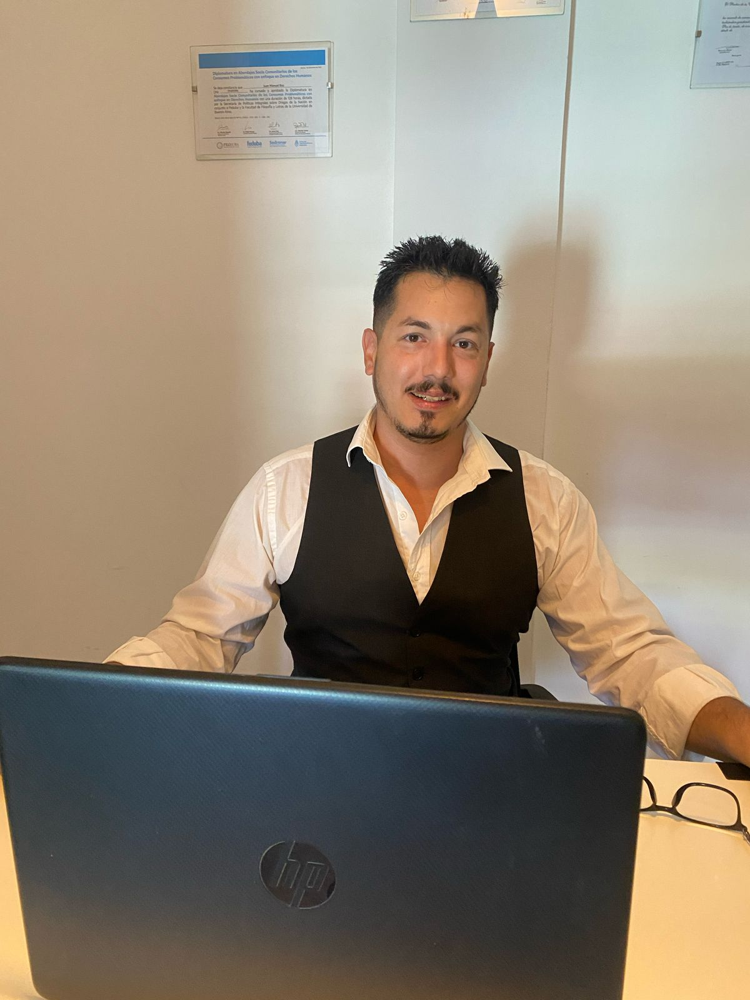

Recuperá el control de tu tiempo y tu paz mental en 12 semanas.
Descubrí 'Al Reloj Lo Manejo Yo': el método para eliminar el analfabetismo de gestión, dejar de vender sesiones sueltas y construir una estructura profesional que funcione con alta eficiencia, sin que tengas que aprender nada nuevo.
Esto es para vos si…
Profesionales con alta formación que se sienten quemados por el sistema, las obras sociales y la burocracia.
Colegas que sienten un alivio profundo cuando un paciente cancela porque están mentalmente agotados.
Expertos que sufren el Síndrome del Impostor Operativo y les cuesta cobrar lo que realmente vale su expertise.
Psicólogos que sienten que su consultorio los maneja a ellos y no al revés, sacrificando tiempo con su familia.
Tenés estudios y años de clínica, pero seguís atrapado en la trampa del autoempleo: si no estás sentado en la silla, no facturás. Vivir del boca en boca y depender de la improvisación constante es una condena operativa que te quita soberanía y energía vital. La excelencia clínica sin soberanía operativa es el camino más rápido al burnout.
No me creas a mí, cree en los resultados de colegas que ya bajaron a la trinchera y recuperaron su vida.
Dejar de responder mensajes a cualquier hora y poner límites claros.
Pasar de cobrar por sesión a implementar ofertas de acompañamiento.
Agendas optimizadas para llegar a casa con energía para la familia.
Existe una forma de ejercer que no depende de intercambiar cada hora de tu vida por dinero. La oportunidad real es pasar de ser un terapeuta reactivo a convertirte en el Director de tu propia Práctica Clínica. Un modelo basado en la disciplina y la evidencia, alejado del lenguaje de gurú y enfocado en resultados respaldados por una estructura sólida.
Quiero ser parte
Con casi 20 años de experiencia clínica, conozco exactamente el peso de la rumiación constante y el cansancio que no se quita durmiendo. Entendí por las malas que la universidad nos prepara para ser excelentes clínicos, pero nos deja analfabetos en gestión.
Mi expertise no viene de libros de negocios genéricos, sino de la trinchera: de haber ordenado mi propia práctica y la de decenas de colegas. Mi enfoque es directo, ético y sin rodeos.
El método paso a paso para pasar de la improvisación a la dirección de tu práctica.
Limpiarás tu agenda de fugas de tiempo y pacientes que no avanzan para recuperar tus primeras horas libres de verdad.
Implementarás sistemas de cobro y protocolos administrativos para que el papelerío y los débitos dejen de devorar tu energía clínica.
Dejarás de vender sesiones sueltas para ofrecer procesos de acompañamiento por objetivos, asegurando ingresos estables y mayor compromiso del paciente.
Utilizarás tu trayectoria ética para dejar de buscar pacientes y empezar a ser elegido por tu expertise, incluso con pacientes que hoy te asustan.
Limpiarás tu agenda de fugas de tiempo y pacientes que no avanzan para recuperar tus primeras horas libres de verdad.
Implementarás sistemas de cobro y protocolos administrativos para que el papelerío y los débitos dejen de devorar tu energía clínica.
Dejarás de vender sesiones sueltas para ofrecer procesos de acompañamiento por objetivos, asegurando ingresos estables y mayor compromiso del paciente.
Utilizarás tu trayectoria ética para dejar de buscar pacientes y empezar a ser elegido por tu expertise, incluso con pacientes que hoy te asustan.
Si querés recuperar tu autoridad profesional y llegar al final del día con resto mental para tu vida personal, agendá tu Sesión Estratégica de Crecimiento. En esta llamada gratuita vamos a analizar tu práctica actual para detectar qué está fallando y diseñar el plan de acción. Al final descubrirás cómo recuperar el mando de tu reloj, independientemente de si decidimos trabajar juntos después o no.
Quiero recuperar mi tiempoAnalizamos tu práctica actual y diseñamos el plan. Sin rodeos.
Insertá aquí el link de tu calendario (Calendly, Cal.com, etc.)